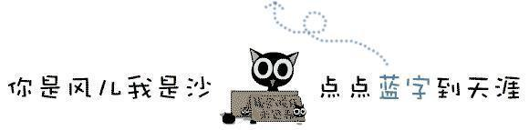
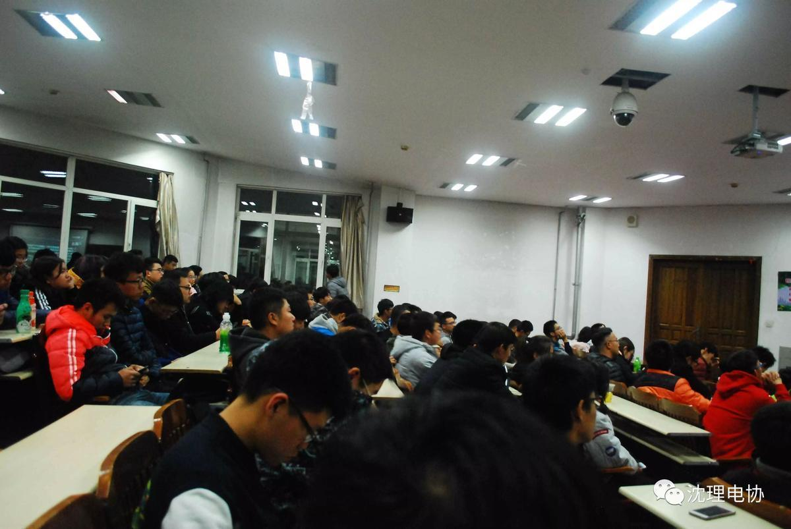
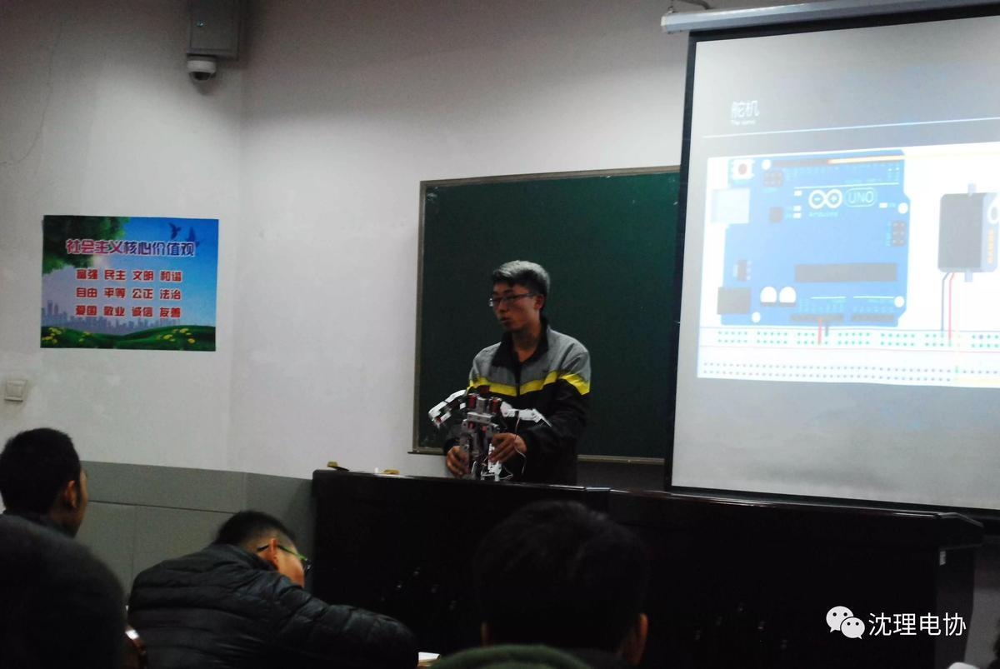
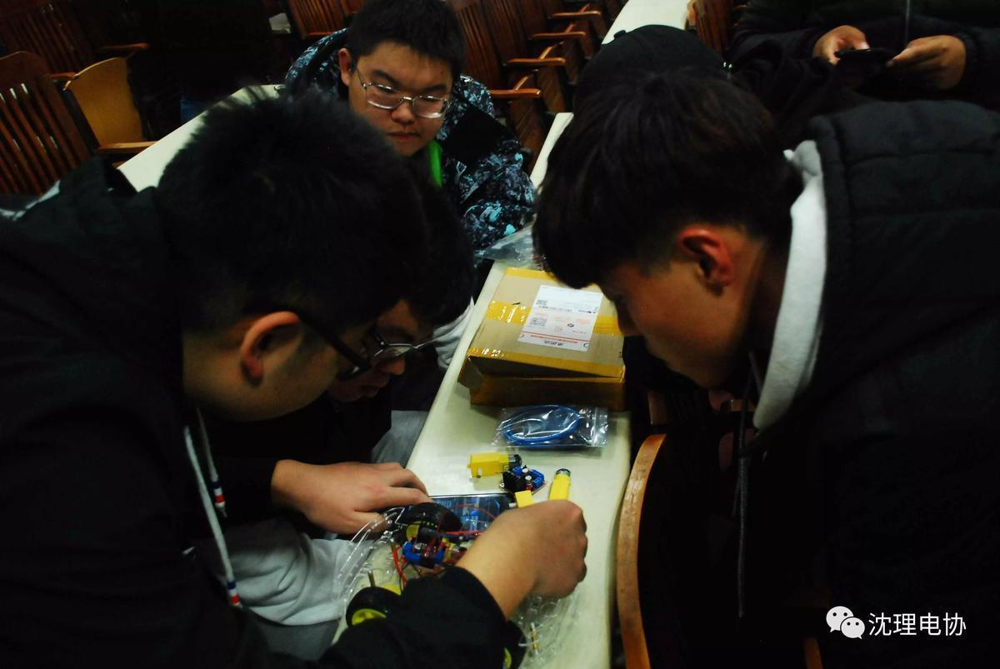
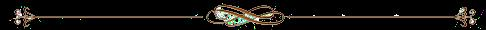
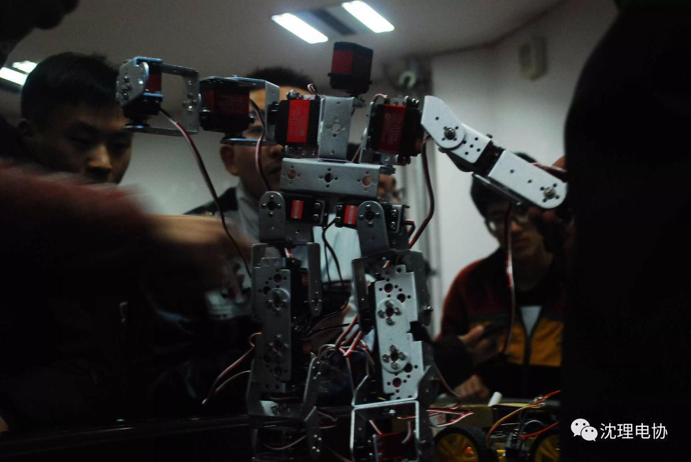

电协——我们在这里相遇

电协——
我们在这里相遇。


轻松的气氛，愉悦的笑容，台上尽量通俗讲解的学长，台下睁大好奇双眼的萌新，这是电协给大一学生开设的第三次教学。
开头电机驱动的接线、控制和调速，学长举了个做LED灯的例子，由于这部分是复习，不少人已实践过制作LED，PWM的概念便形象具体了起来，完成唤醒记忆的工作。

第二部分是“串口”，学长反复强调接线的位置，print与println的不同之处，接着引出一个串口打印的简单程序，让我们初步掌握“串口”这一概念。

最后一部分讲的是舵机，不论什么，都得有能量才能动，所以必须先将舵机连接好。在这舵机的部分，涉及到了c语言，一个机器，不论它能做的有多么华丽，都是以程序为基础。学长先给我们展示了舵机转动的过程，后又拿出了一个令人叹为观止的大机械蜘蛛，其型俊美，构造精细，真令人向往。

这节课虽短，知识却满溢。课上时间紧凑而有条不紊，课下众人留下来探讨，这就是电协的课堂。热爱电协的人儿，请在学长学姐们的指导下，多加讨论，实践，主动向他们询问，到实验室观摩，用自己的双手尽情创造！

图片|电协信息部——白皓天
编辑|电协信息部——魏朋